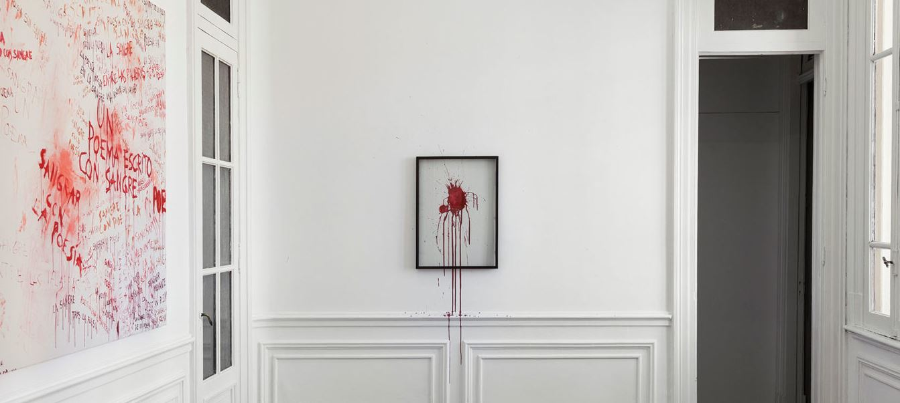

<div class="homeImage">
  <div class="homeImage__box">
    
  </div>
  <div class="homeImage__drops">
    <div class="homeImage__drops-drop1"></div>
    <div class="homeImage__drops-drop2"></div>
  </div>
  <svg xmlns="http://www.w3.org/2000/svg" version="1.1">
    <defs>
      <filter id="liquid">
        <feGaussianBlur in="SourceGraphic" stdDeviation="10" result="blur" />
        <feColorMatrix in="blur" mode="matrix" values="1 0 0 0 0  0 1 0 0 0  0 0 1 0 0  0 0 0 18 -7" result="liquid" />
      </filter>
    </defs>
  </svg>
</div>